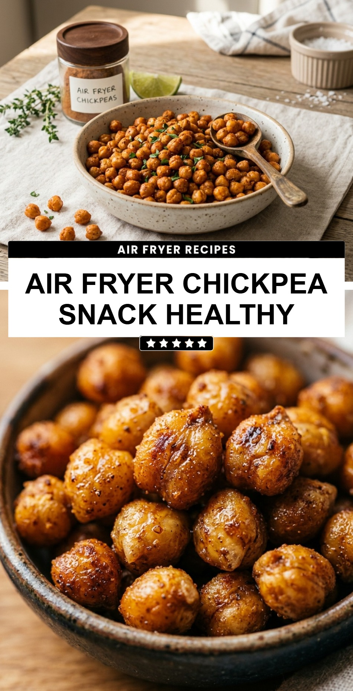

Air Fryer Chickpea Snack Healthy
October 19, 2026

Finding a snack that is both satisfyingly crunchy and genuinely good for you can feel like a challenge. These air fryer chickpeas are the ultimate solution for those mid-afternoon cravings or late-night munchies. They offer a protein-packed punch and a delightful texture that rivals traditional potato chips without the heavy oils or processed additives. By using the air fryer, you get a perfectly even crisp in a fraction of the time it takes in a conventional oven.
Recipe Information
Prep Time: 10 minutes
Cook Time: 20 minutes
Total Time: 30 minutes
Servings: 4
Difficulty Level: Easy
Nutrition Information
Calories per serving: 155 kcal
Protein: 7g
Carbohydrates: 21g
Fat: 5g
Fiber: 6g
Sugar: 1g
Sodium: 310mg